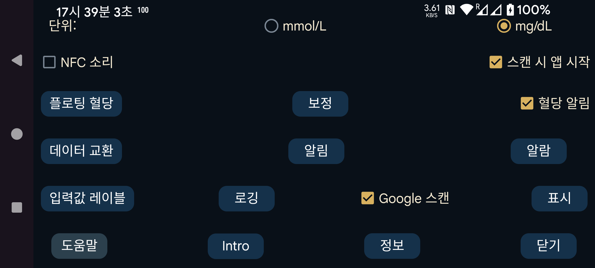

ar be de es fr hi it ja ko nl pl pt ru tr uk uz zh en
혈당 값을 mmol/L 또는 mg/dL 중 어떤 단위로 표시할지 선택합니다.
스캔할 때 진동과 함께 소리도 냅니다.
이 옵션을 선택하면 이 앱이 화면에 표시되어 있지 않아도 NFC로 센서를 스캔할 때 앱이 시작됩니다. 여러 앱에서 이 설정을 사용하면 Android가 사용할 앱을 묻는 선택창을 표시합니다. 실제로는 한 번 앱을 선택하거나 기본 앱으로 지정해도 제대로 작동하지 않습니다. 따라서 이 경우 앱이 전경에 없으면 스캔할 수 없습니다. 이 앱에서 이 옵션을 끄면 적어도 한 앱은 이런 방식으로 활성화될 수 있습니다.
루트 권한이 있으면 Abbott LibreLink 앱의 NFC 활성화도 비활성화할 수 있습니다(Libre 3에는 적용되지 않음):
adb shell 또는 Termux에서 root가 된 뒤 다음을 입력하십시오:
pm disable com.freestylelibre.app.nl/com.librelink.app.ui.common.NFCScanActivity
LibreLink 2.7.1 이하에서는 다음을 사용해야 했습니다:
pm disable com.freestylelibre.app.nl/com.librelink.app.ui.common.ScanSensorActivity
여기서 com.freestylelibre.app.nl은 네덜란드판 LibreLink이며, 사용 중인 버전의 패키지 이름으로 바꿔야 합니다. 다음 명령으로(root 없이도) 이름을 찾을 수 있습니다:
pm list package freestylelibre
그 뒤에도 LibreLink가 전경에 있을 때는 스캔에 사용할 수 있지만 다른 경우에는 시작되지 않습니다. LibreLink 2.5.2 이상은 루트를 감지하면 스스로 종료됩니다. 하지만 Magisk에서는 Magisk의 이름을 바꾸고 개별 앱을 denylist(Magisk 24.3) 또는 MagiskHide(Magisk 23.0)에 추가하여 루트를 쉽게 숨길 수 있습니다. Juggluco도 denylist에 추가해야 합니다. 미국 FreeStyle Libre 2 센서를 사용하는 경우를 제외하면 루트 검사 기능이 없는 구형 LibreLink를 사용할 수도 있습니다.
루트 없이 adb shell에서 앱 전체를 비활성화할 수도 있습니다:
pm disable-user --user 0 com.freestylelibre.app.nl
Abbott 고객 서비스에 연락하기 전에는 다음 명령으로 다시 활성화할 수 있습니다:
pm enable com.freestylelibre.app.nl
(이전 이름: "Android 상태 표시줄의 혈당"). 이 옵션을 켜면 Bluetooth로 스트리밍되는 혈당 값이 알림과 Android 상태 표시줄에 조용히 표시됩니다. 끄면 숫자 대신 점이 표시되고 알림에는 "센서에 연결" 또는 "데이터 교환" 정도만 표시됩니다. 백그라운드에서 계속 실행되는 앱은 Android 규정상 이런 보이는 알림을 표시해야 합니다(그렇지 않으면 Android가 앱을 쉽게 중지합니다). Juggluco는 "Bluetooth로 센서 사용"이 꺼져 있고 미러 연결도 없을 때만 알림을 끕니다.
일부 스마트폰에서는 Android 알림 설정을 변경해야 혈당 값이 Android 상태 표시줄에 나타납니다. 예를 들어 Realme GT 5G에서는 앱 목록→Juggluco→알림 관리로 이동하여 glucoseNotification 탭에서 "Set to Silent"를 꺼야 합니다. 그러면 "Display in status bar"가 켜진 것으로 표시됩니다.
왼쪽 가운데 메뉴에서 알림 을 선택하여 Android 알림을 받을 수도 있습니다. 이 경우 그렇게 구성되어 있다면 일부 스마트워치로 알림이 전송됩니다. Garmin 워치에서는 작동하지만 다른 기기에서도 작동하는지는 알 수 없습니다. 알람도 알림을 생성합니다.
이 기능을 켜면 어떤 앱이 전경에 있든 현재 혈당 값이 표시된 작은 이미지가 화면에 계속 떠 있습니다. 처음 켤 때는 앱 목록으로 이동하여 Juggluco에 다음 권한을 부여해야 합니다: 다른 앱 위에 표시.
고혈당 및 저혈당 알람, 신호 끊김 알람과 값 사용 가능 알림을 설정합니다.
입력값에 사용할 레이블을 지정합니다. 인슐린 투여량, 섭취한 탄수화물, 축구한 시간 등 어떤 레이블을 사용할지 선택하는 화면을 엽니다. Garmin 워치 앱 Kerfstok도 사용하는 경우 이 레이블들이 워치 앱으로 전송됩니다.
Juggluco의 데이터를 다른 앱이나 서버로 보내는 여러 방법입니다. (워치로 데이터를 보내려면 왼쪽 메뉴→워치로 이동하십시오.)
지정한 시간 범위 안에 특정 음식이나 약물의 입력값을 입력하지 않았을 때 알람이 울리도록 설정합니다.
Sibionics 센서 포장과 Dexcom G7/ONE+ 어플리케이터의 데이터 매트릭스, 그리고 왼쪽 가운데 메뉴→미러의 QR 코드를 다음으로 스캔합니다: Google 코드 스캐너. 선택하지 않으면 ZXing 을 사용합니다. 대부분의 기기에서는 Google 스캔이 더 잘 작동하지만 때로는 작동하지 않습니다. 오류와 함께 실패하면 항상 ZXing을 사용하지만, 때로는 Google 스캔이 오류를 반환하지 않은 채 그냥 작동하지 않을 수도 있습니다.
목표 범위부터 언어까지 데이터 표시 방식과 관련된 여러 설정입니다.